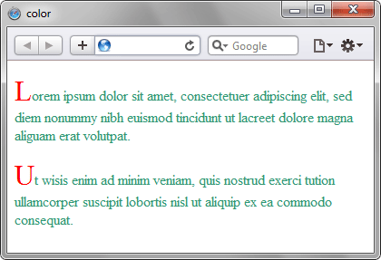

Определяет цвет текста элемента.
Для задания цвета могут использоваться
шестнадцатеричные значения,
RGB, RGBA, HSL, HSLA,
а также стандартные имена цветов.
Синтаксис
color: <цвет> | inherit
<цвет>
Устанавливает цвет текста. Значение можно задавать разными способами: через HEX, RGB, RGBA, HSL, а также стандартными названиями цветов.
Устанавливает цвет текста. Значение можно задавать разными способами: через HEX, RGB, RGBA, HSL, а также стандартными названиями цветов.
inherit
Наследует значение родителя.
Наследует значение родителя.
Цвет текста наследуется потомками,
поэтому если задать цвет для body,
он автоматически будет применяться
ко многим элементам страницы.
Пример:
<!DOCTYPE html>
<html>
<head>
<meta charset="utf-8">
<title>color</title>
<style>
h1 {
color: #E27D60;
}
p {
color: rgb(65, 179, 163);
}
span {
color: blue;
}
</style>
</head>
<body>
<h1>
Заголовок страницы
</h1>
<p>
Основной текст с цветом,
заданным через RGB.
</p>
<span>
Текст синего цвета
</span>
</body>
</html>
Результат применения свойства color:
